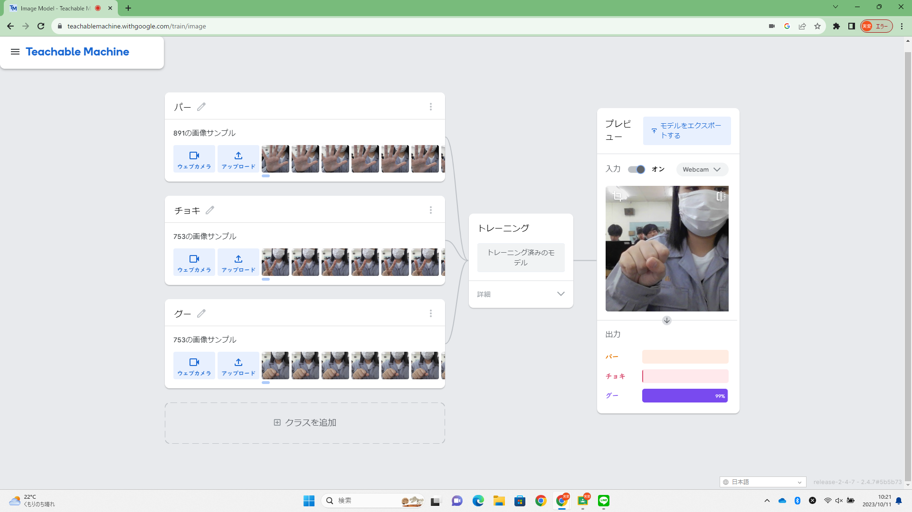
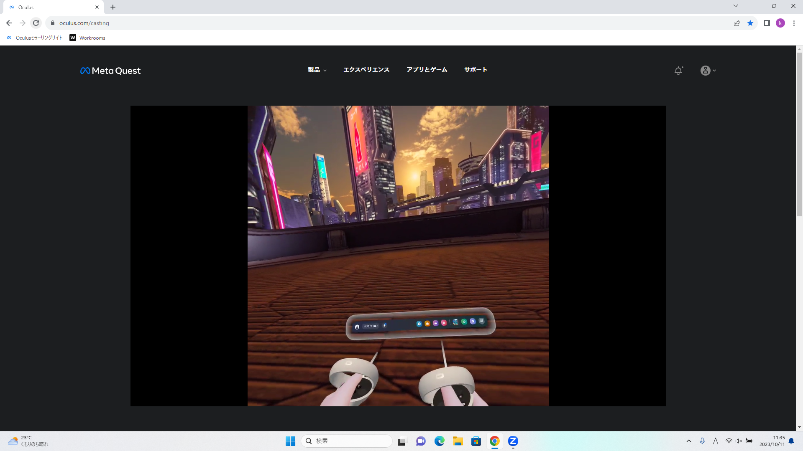

第2週目
2-1 １週目のレポートをHTMLで作る
１週目のレポート
1.内容
前回使用したgithubを用い、ウェブサイトでレポートを作成しました。
2.感想
途中で画像の挿入部分やリンク作成の箇所を消してしまったため、第2回のレポートからその部分だけを見つけてコピー＆ペーストし元に戻してからそれらを挿入しレポートを完成させました。その中でもリンクを張る部分に当たりをつけ必要な箇所だけを抜き出す作業が一番大変でした。
2-2 機械学習体験

1.内容
TeachableMachineで画像を学習させグー、チョキ、パーを識別できるようにしました。
2.感想
より多くのサンプルを用意した方が正確な結果が出たので、どの位の数のサンプルから正しく識別することが出来るのかという点についても調べてみたいです。
2-3 VR（バーチャルリアリティー：Virtual Reality）会議室の体験

1.内容
Metaverse2でバーチャル空間内での会議等を体験しました。
2.感想
話題になっているMetaverseですが実際に使用するのは高専祭を除いては初めてだったので、とてもわくわくしました。実習が終わってからもどこかまだ現実ではないような、VR空間が残っているような感覚がありました。